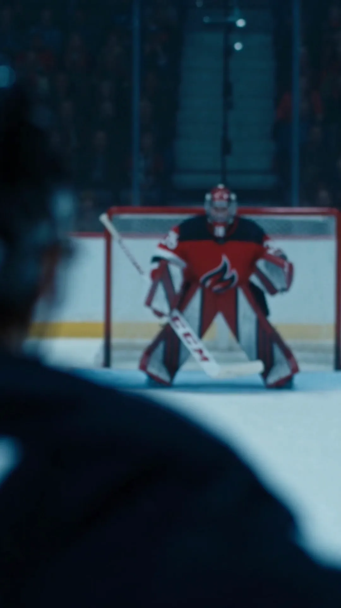
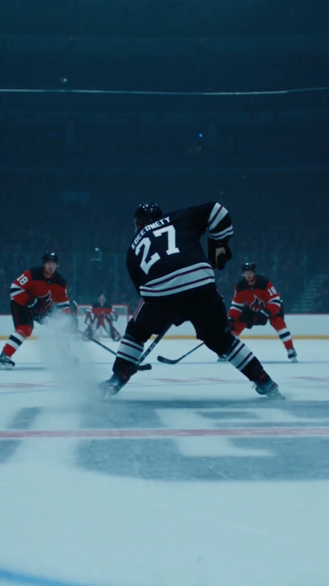
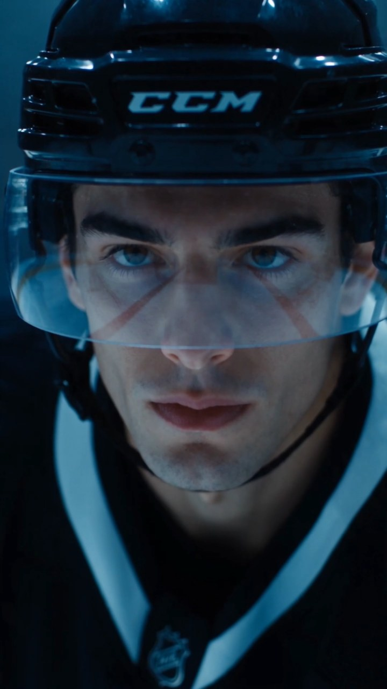
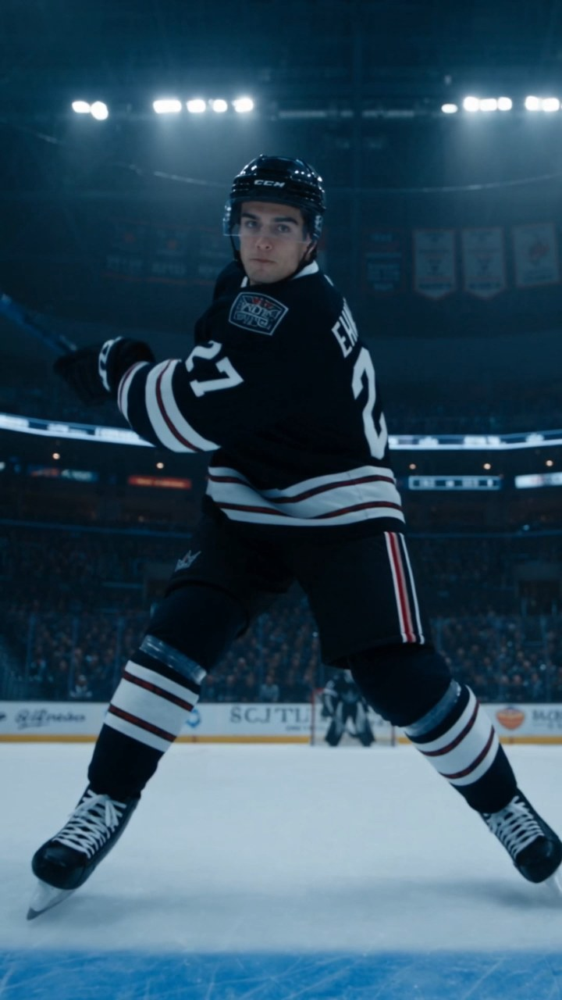
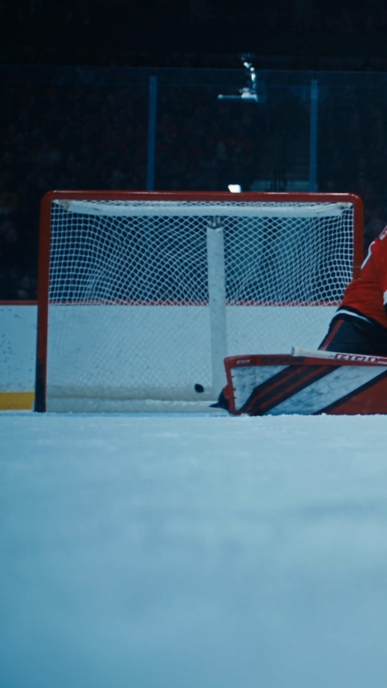

FINAL FILM / WATCH FIRST
先看成片，
再拆镜头。
完整片段 00:40本页拆解其中 24 秒核心动作段落
AI DRAMA · ICE HOCKEY精彩短剧1080 × 1920 · SOUND DESIGN

FINAL FILM / WATCH FIRST
COMPLETE WORKFLOW
剧本片段 → 分镜设计 → 机位 / 镜头语言
→ AI 提示词 → 最终画面

CASE 01 · ICE HOCKEY23.48 SEC / 9:16从剧本到最终画面
以 Ryan Carter 的一次高速突破与爆射为核心，在竖屏内完成建立、夹击、变向、锁定、蓄力与破网。重点不是“生成冰球画面”，而是控制空间关系、动作因果、镜头节奏和声音落点。
先定义叙事目标，再决定生成什么。
INT. PROFESSIONAL ICE HOCKEY ARENA — MATCH NIGHT
Ryan Carter，王冠队 27 号，单手控球高速切入进攻区。两名熔炉队球员从左右同时逼近，他急停横削、借惯性空隙变向甩开夹击。
越过肩背，球门与守门员进入视线。Ryan 深呼吸，抬杆、拧身、爆射。守门员横向扑救擦空，冰球砸入白网，门框震颤。
最后一帧停在冰球破网与球网回弹，不渐黑，不切黑。
六个机位单元构成完整的动作曲线。



焦段、运动和切换都服务同一条情绪曲线。
以触觉细节开场，随 Ryan 同步启动；动作匹配切至急停。
镜头与身体同时顿挫，强化变向力度；视线匹配切。
肩背作为前景遮挡，把观众注意力交给球门目标。
把高速段落压至一瞬安静，用呼吸制造射门前张力。
球杆形成对角线，突出蓄力、拧身与英雄感。
三段复合运动保持同一机位逻辑，最后一帧直接结束。
把导演判断翻译成模型可执行的约束系统。
职业冰球馆、满座观众、透明护板、冷白顶光与冰面冷蓝反射。
Ryan 27 号黑色王冠队服；两名夹击者与守门员保持空间连续。
冰刀横削、碎冰阻力、身体惯性、冰球直线飞行、球网受力回弹。
35/50/85mm 分段控制；高快门冻结动作；ETERNA 冷调、暗部压深。
无 BGM、无画面文字；保留音效、环境声与赛事解说，结尾不渐黑。
无背景音乐，仅音效、环境声与解说配音；画面绝不出现文字、字幕、气泡或标注。冷调复古电影质感、冰场冷蓝基底。结尾停在冰球砸进球网的最后一帧直接结束。物体运动符合物理逻辑，关系轴锁同一侧，绝不越轴。
室内职业冰球馆以环形看台、顶部桁架灯阵与中央记分屏建立空间。顶部冷白泛光灯均匀打下，冰面产生大片冷蓝高光并自下补亮球员下颌和冰刀。看台暗部人海攒动，整体高对比、低饱和、颗粒锐利，无暖光介入。
Ryan 压低身形单手控球前冲；两名熔炉队球员自左右夹击，被急停变向甩开后因惯性滑出；守门员随射门方向横向扑救却擦空。进攻方向始终指向球门，机位全程处于冲刺关系轴同侧。
冰球服面料哑光、护具与头盔反冷光、冰刀金属刃高光、球杆呈碳纤维质感、冰面湿滑反射真实。排除塑料感冰面、塑料护具、贴图式碎冰、玩具冰球与 AI 糊边。
0–8s：冰刀急刹特写升格，上摇环绕至运动中的 Ryan 背影，35mm 贴背跟拍并绕至侧前。8–12s：50mm 跟随急停横削和变向过人。12–15s：过肩快速推焦至守门员。15–17.5s：85mm 正面缓推凝视。17.5–20s：低机位跟随抬杆，轻微推轨变焦。20–24s：85mm 跟球推进、随扑救侧摇、破网骤定。
冰刀急刹“嚓——”、碎冰飞溅、运球哒哒、护具摩擦、击球爆裂声、冰球破风、球网与门框震响、观众声浪。画外解说：“Carter splits the defense—oh, what a move!”